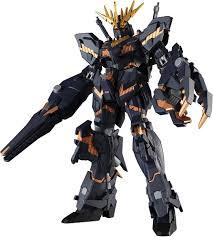
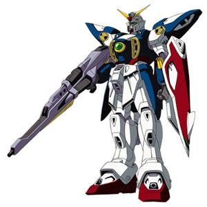
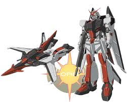

Mobile Pod
El mobile pod es el predecesor del mobile suit. Son máquinas simples que consisten en un cuerpo principal, normalmente esférico, con manos manipuladoras y una serie de propulsores en su estructura.
Suelen tener un desempeño pobre en comparación con otras mobile weapons, pero continúan en uso debido a que son baratos y fáciles de construir. El mobile pod más popular es el RB-79 Ball de la línea de tiempo Universal Century, apareciendo principalmente en la serie original Mobile Suit Gundam.

Mobile Suit
Los Mobile Suits son el más popular y numeroso tipo de mobile weapon en las series de la franquicia Gundam.
Generalmete, un mobile suit tiene aproximadamente 18 metros de alto, con la cabina colocada en el torso. Sin embargo, existen excepciones. Algunas unidades son más grandes o ligeramente más pequeñas, y ocasionalmente la cabina se encuentra localizada en un lugar diferente, como en la cabeza o (en casos raros) en la entrepierna.

Mobile Armor
Los Mobile Armor son similares a los mobile suit, pero varían enormemente en su diseño. Casi siempre son más grandes que los mobile suit, y suelen ser no humanoides. Debido a su gran tamaño, con frecuencia cuentan con fuentes de energía más poderosas, ofreciéndoles la posibilidad de montar armamento de gran capacidad destructiva, como gigantescas armas de energía o poderosos sistemas defensivos. Su gran tamaño les permite utilizar equipos que son demasiado voluminosos para caber en mobile suits..

Mobile Weapons Transformables
Son Mobile Weapons con múltiples configuraciones que les permiten cambiar su diseño básico mediante una transformación. Normalmente, estas configuraciones se limitan a un modo estándar de Mobile Suit, donde la unidad actúa como un mobile suit normal, y un modo mobile armor que ofrece una mayor velocidad y protección para las partes vitales a costa de la flexibilidad y la potencia de fuego..